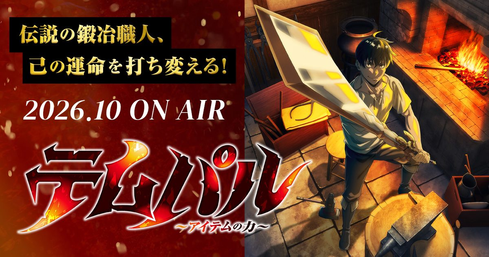

2026-09-16 · 动漫深读
Crunchyroll 秋季档 9/15 一锤定音：《Overgeared》10 月独占上线。出品方是 REDICE——也就是把《Solo Leveling》送上神坛的那家。于是所有人都在问同一个问题：它是不是下一个 Solo Leveling？我们的答案比"是或不是"有意思一点。

先说清楚身份。Overgeared（日文名《テンパル：アイテムの力 / Tempal: The Power of Items》）原本是朴善野（Park Saenal）的韩网小说，后来由 REDICE STUDIO 做成席卷全球的小说了漫画。它和《Solo Leveling》是同一个娘家——都出自 REDICE。而 Solo Leveling 刚在 2026 年 5 月成为 Crunchyroll 史上第一个用户评分破百万的动画，4.9/5 高悬不坠。
所以《Overgeared》动画官宣那一刻，舆论几乎本能地给它套上"接班人"的冠冕。再加上故事也是"现实废柴进 VR 游戏开挂逆袭"——和 Solo Leveling 的"死里逃生开系统"、SAO 的"被困 VR 世界"血脉相连。ScreenRant 直接用了那句标题："Solo Leveling Meets Sword Art Online"。但冠冕这东西，戴上去容易，戴稳了难。
主角 Shin Youngwoo，现实里是个还着贷款的废柴，全家都放弃他了。他沉迷的 VR MMO 叫《Satisfy》——设定里有超过 20 亿玩家。他在游戏里叫 Grid，开局也是个"痛苦地平庸"的战士。转折点很妙：他接到一本失传的《Pagma's Rare Book（传说铁匠的遗产）》，代价是——拿到它的瞬间，所有等级归零。他从头练起，但换了"传说铁匠"这个稀有职业，能锻造神级装备。
这就是它和 Solo Leveling / SAO 最不同的地方：别人是"我自己变强去砍人"，Grid 是"我造出神装，让神装替我改写战局"。他的爽点不在挥剑，在锻剑。制作阵容也挺能打：
监督 Ayako Kono（河野亚矢子）——履历里有《SAO Progressive》剧场版，还做过《四月是你的谎言》《败犬女主太多了！》的分镜，叙事手感在线； 系列构成 Kenta Ihara（伊原达也）——写过《Vinland Saga》《死囚枭雄》； 音响监督岩浪美和——《JoJo》《Baccano!》的老手； 配乐藤泽庆树——《Land of the Lustrous》《Love Live!》； Grid 声优 橘龙丸——《God of High School》的 Jin Mori； 女主 Yura 声优 濑户麻沙美——《咒术回战》的钉崎野蔷薇。
一句话：班底不糊弄，是冲着"正经做"去的。
该期待的理由，在"锻造流"这个差异化。 2026 年的"零到英雄 + 游戏世界开挂"已经多到泛滥——Solo Leveling、TBATE、Tower of God 排着队。但 Grid 的核心驱动力是"造装备"而非"变强本身"，这让他的成长曲线和爽感来源和所有人都不一样：观众期待的不是"他下一拳多狠"，而是"他下一把锤子能造出什么逆天玩意"。这种"工匠爽文"在动画里几乎是空白赛道，原作全球基本盘又厚，REDICE 的推流能力也已被 Solo Leveling 验证。
该警惕的理由，两个字：J.C.STAFF。 负责动画的 J.C.STAFF 不是不能打——《龙与虎》《食戟之灵》《少女革命》都是它。但它最近的《一拳超人》第三季制作质量翻车，被骂到出圈；而 Overgeared 的先行预告，粉丝反馈也是"动作戏展示太少、观感平平"两极。动画圈是 freelancer 轮转制，过去表现不等于未来，但"J.C.STAFF + 热门 manhwa"的组合，近年确实和"作画翻车"强相关。
再补一刀现实：10 月秋季档卷到离谱（黑咒 S2、药屋 S3、JoJo 飙马野郎、蓝箱 S2 同台）。Overgeared 想从 Solo Leveling 的阴影里抢到观众，靠的不能是"我也是开挂男主"，得是"我造的装备你主角团都想要"。原作有这个底子，就看动画组舍不舍得把"锻造"拍出仪式感。
我们的期待值评分：7.9 / 10。 原作差异化 + REDICE 推力 + 班底及格线，撑起"值得追"；J.C.STAFF 风险 + 套路疲劳 + 秋季档厮杀，把分压在"别期待封神"的区间。
我们的观察： REDICE 正在搭一个 manhwa 动画帝国——Overgeared 之外，《全知读者视角》定档 2027、《Tomb Raider King》更早。Overgeared 是这块拼图里"验证 J.C.STAFF 能否扛热门"的关键一战，它的成败会直接决定后面几部的动画委外策略。
我们的观点： 别用"Solo Leveling 接班人"去期待它。那顶帽子对它是枷锁：观众会拿成濑优的"系统无双"去比 Grid 的"铁锤慢热"，必然失望。把它当成"VR 世界里的匠人成长番"，反而最可能吃到惊喜——前提是前三集就把"锻造"拍出爽感。
我们的案例 / 对比： 同样"游戏异世界开挂"，Solo Leveling 爽在"猎魔升级"、SAO 爽在"被困求生"、Overgeared 爽在"造物逆袭"。三者母题相近，爽点正交；Grid 若能站稳"装备改变战局"，它就是三者里最特别的那一个，而不是最弱的那一个。
我们的实验（开播前该盯什么）： ① 前三集是否给"锻造"特写与仪式感——没有就危险；② 预告里被吐槽的动作戏，正片是否补回；③ J.C.STAFF 本季产能是否被多开项目摊薄；④ 橘龙丸作为原作老粉的 Grid，声演是否立住。四项里过两项，值得追。
《Overgeared》不是又一个 Solo Leveling，它只是恰好和 Solo Leveling 出自同一个娘家、讲着相似的"废柴开挂"。真正决定它高度的，是动画组敢不敢把"铁匠"拍成主角，而不是把 Grid 塞进一套烂大街的升级模板。10 月见分晓——如果它真把"锻造流"拍出了独一无二的爽，那 REDICE 的下一个十年，可能比 Solo Leveling 那一个还要长。
资讯来源：Crunchyroll 秋季档排期公告（Anime News Network / CBR）、Anime Corner 与 ScreenRant 报道、REDICE Studio 官方信息。本站为导航聚合站，外链均指向官方 / 平台站点，内容仅供交流学习。